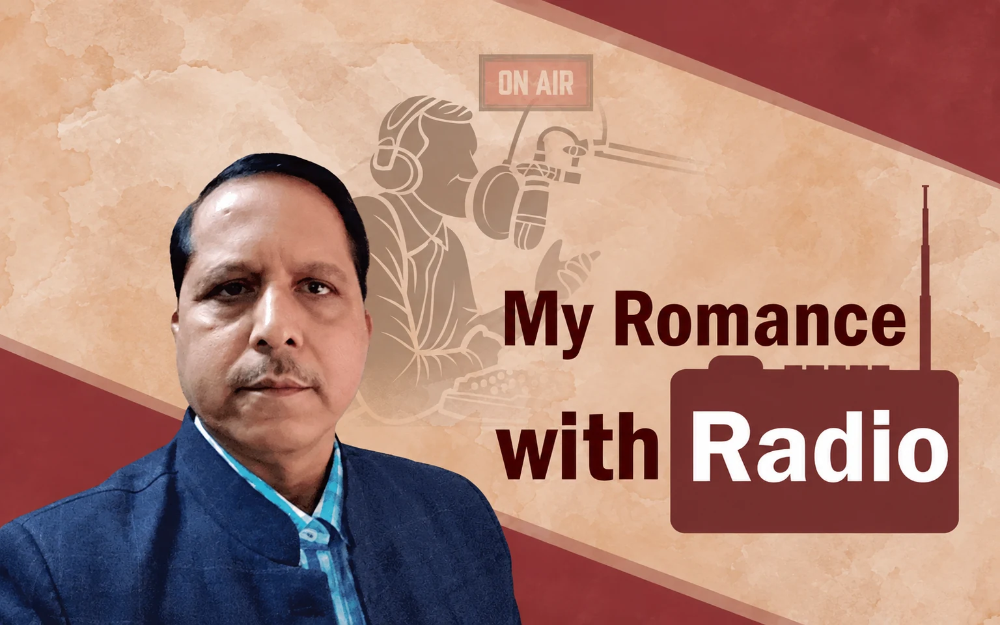

Missing Memories
My Romance with Radio

During my early childhood in sixties one evening my father came with a Bush radio from Cuttack and it became an instant sensation in our neighborhood. People of all ages including children assembled in our house to listen to the programs of different genres; music, drama, news etc.
All of us almost got addicted to it within a few days and our discussion went round the different programs. At the time of the cyclone and so also the election, people were very much eager to know the latest updates.
In 1971 my father fought the Legislative Assembly election on a Congress ticket from Sukinda constituency and lost. By that time he was a two time Chairman of our Panchayat Samiti and was very popular for his honesty and selfless public service. However, electoral politics has no logical ending at times. It was a great shock for him and brought him huge financial loss.
One day the taxi driver engaged during the election came to take his outstanding dues. Being a man of principle, father immediately sold out the radio set for four hundred rupees and paid it to the taxi driver. Suddenly we lost the company of the radio and it saddened us for few days. Of course, by then some of our neighbours had acquired radio sets of their own and we used to visit their house sometime to listen to some important programs.
In the year 1975 when I joined the local college as a first year student, one of my poems got selected to be broadcast in Yuva Vani program of All India Radio, Cuttack. It was a news in the college and our locality. On that fateful evening everyone was tuned to the radio set to listen to the recitation of my poem and I got an instant recognition as a poet.
For the first time in my life I got an honorarium of twenty five rupees by money order from All India Radio and my joys knew no bounds. Subsequently, more of my poems and short stories got broadcast in radio.
In one afternoon in 1980 while I was a post graduate student in Utkal University, Vanivihar, I had a chance meeting with Dr Jayant Das, then working as Program Executive in AIR, Cuttack. By that time I had an acquaintance with him in course of my visit to AIR, Cuttack for presenting my writings. He then and there invited me for conducting an interview with legendary Dr Harekrushna Mahatab next day in the AIR studio for Yuva Vani program.
Dr Mahatab was a great personality and I had a fair acquaintance with him. I used to write regular letters to him on various issues and he was always prompt in sending the reply in a post card for which he was very famous.
Next day I arrived in AIR, Cuttack and Jayant Babu briefed us about the interview. Sriram Das and Jayanti Rath, two comperes of Yuva Vani were with me. Sriram Das is now a senior journalist of the State and Jayanti Rath joined AIR as a Program Executive and ultimately retired as Station Director, Doordarshan Kendra, Bhubaneswar.
Dr Mahatab arrived in the studio at the right time and we were introduced to him by Jayant Babu. While introducing me Dr Mahatab indicated from his side that he knew me well. It intrigued Jayant Babu. It was a very open interview where we asked him all controversial questions and he answered all of them in a very candid manner.
Destiny had something stored in for me. In 1984 the Staff Selection Commission advertised for few posts of Transmission Executive in AIR and Doordarshan. I applied for the post and got a call for the interview in Kolkata. I appeared the interview and incidentally I was the first person to be interviewed that day. It was a very successful and the board members were visibly satisfied with my performance.
With my educational background they were skeptical about my joining the post since I was in their estimation quite qualified for a position in civil service. I had to convince them that literature and culture remained first love and I would definitely join if get selected. In fact few months thereafter I got the appointment order from AIR, Cuttack when I was passing through a most distressing time due to lack of a descent engagement.
I joined AIR, Cuttack in October, 1984 and within few months got recognised for my knowledge, sincerity and proactive attitude. Mr Shyamanad Vaisya, an Assamese gentleman was the Station Director and I became his blue eyed boy within no time.
I enjoyed the company of veteran broadcasters whose programs I used to listen in my childhood days and the VIPs in different walks of life visiting the studio to participate in various programmes. Some of my talks and documentaries got wide appreciation.
I have some priceless memories of my days in AIR, Cuttack. In 1986 I got selected for Odisha Finance Service and was in a dilemma whether to leave AIR or not. Then the promotional avenue was not so bright and the pay structure was also not so attractive. Finally, on 28th February 1986 I had to bid good bye to AIR and the same day my mentor Mr Vaisya, the Station Director got retired on superannuation.
Next day I joined the State Government and my honeymoon with radio ended abruptly.
Leave a thought
Likes and comments will open soon.